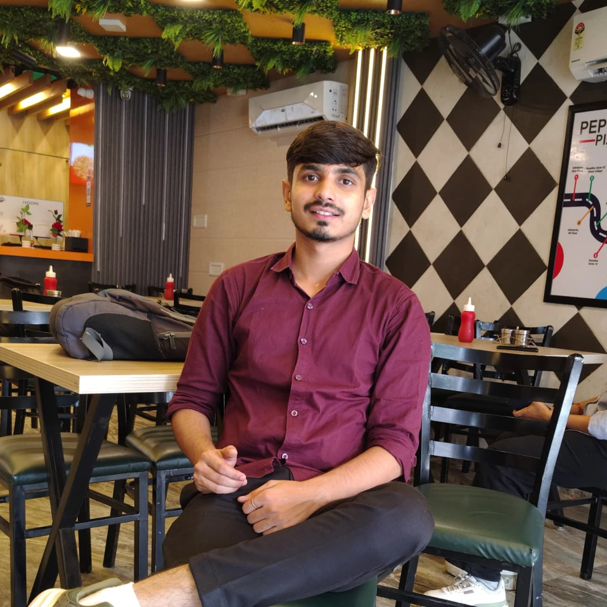

About Me
Hello Everyone "This Side Dipanshu Dua Founder of Punjabi & Tandoor Outlet"

Who I am
I am from Hastinapur (Meerut)
"After completing my BCA, I stood at a crossroads that many graduates face — a flood of options, from corporate jobs to the safety of a nine-to-five routine. But somewhere deep down, I knew I didn't want to follow the crowd. I wanted to build something of my own, something that carried my name and my vision. So instead of chasing a job title, I chose to chase a dream — Punjabi & Tandoor Outlet. This restaurant isn't just a business to me; it's proof that a degree doesn't have to define your path, and that sometimes the boldest choice is the one that scares you the most. Every dish we serve here carries a piece of that decision — the decision to be different, to build rather than settle, and to turn a simple idea into something real."
"Come, be a part of this journey with us. Whether you're craving something rich and spicy or just a warm meal that feels like home, our doors are always open. We promise honest food, genuine hospitality, and a table that feels like it was set just for you. See you soon at Punjabi & Tandoor Outlet!"